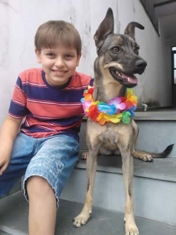

Quem somos - Meu amigo cão

Quem somos?
O que nós acreditamos:
Na Meu amigo cão, o nosso sucesso como uma organização é conduzida pelo cuidado que temos com nossos animais.
Acreditamos que o cuidado com os animais transforma vidas. Quando um pet está saudável e feliz, isso reflete diretamente na felicidade das pessoas ao redor, melhorando o humor, reduzindo o estresse do dia a dia e fortalecendo o vinculo de todos, afinal, quem não gosta de um companherinho animado e feliz.
Também acreditamos na importância do respeito aos animais, na posse responsável e no fortalecimento do vínculo entre humanos e seus companheiros de quatro patas é possivel garantir uma vida boa e duradora para ambos os lados.
Ser referência em cuidado animal, reconhecida pela qualidade dos serviços, pelo carinho com os pets e pela confiança dos nossos clientes.
Buscamos sempre crescer de forma sustentável, inovando e oferecendo o melhor para garantir o bem-estar dos animais e a tranquilidade de seus donos em todas as situações e necessidades que precisam.
Nossas decisões e atitudes são guiadas por valores que definem quem somos: